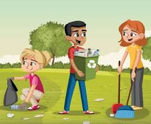
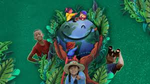

Cuidar a los seres vivos implica proteger la biodiversidad y los ecosistemas mediante acciones diarias como reciclar, reducir el consumo de agua y energía, plantar especies nativas y evitar el uso de pesticidas. Es fundamental no comprar fauna silvestre, respetar sus hábitats, recoger los desechos de las mascotas y apoyar productos sustentables